Impostors
From C4 Engine Wiki
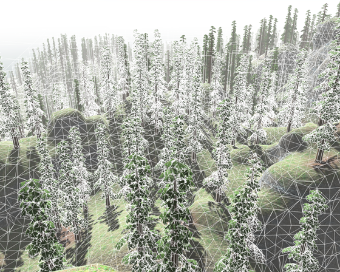
The C4 Engine includes powerful impostor technology that can be used to render large numbers of instanced objects such as trees. An impostor is a representation of a model that is rendered as a single quad in place of the full model when it is far away from the camera. Impostors are sometimes called billboards because they are nothing more than a flat quad that always faces the camera. (However, impostors only rotate about the z axis to face the camera.)
This page describes the procedures for creating the resources necessary to use the impostor features in C4. Example files referenced by this page demonstrating the use of impostors can be found in the Data/Tutorial/impostor/ directory.
Using an impostor for a complex model like a tree has the following performance advantages:
- An impostor is always rendered as a single quad having four vertices, no matter how complex the real model is. If geometry shaders are available, then impostors can even be rendered using only one vertex each from the engine's perspective.
- An impostor has zero internal overdraw since it is rendered as a flat quad. A complex tree model can have significant overdraw at each pixel when rendered in the distance.
- Impostors for the same model can be grouped into a single large draw command. This boosts performance significantly for both the CPU and GPU.
In general, using impostors allows a large number of complex models to be rendered with high performance by faking the ones that are far away. This technique is essential for rendering things like large forests. Figure 1 shows a wireframe view of a scene containing thousands of tree models. The wireframe makes it evident that the trees close to the camera are rendered as real models and the trees far away from the camera are rendered as simple quads. There is a transition region in between these two representations where both the real model and the impostor are rendered.
In the C4 Engine, impostors are rendered with dynamic lighting, dynamic shadowing, and full support for shaders. Many important techniques are used by the engine to make impostors look as real as possible in dynamic environments, and additional techniques are used to make the transition from the real model to its impostor a smooth process free of pops. In order to achieve all of this, several types of information about a model are pre-rendered into special impostor textures that are later used by the impostor's material.
The general procedure for using impostors in a scene consists of the following steps:
- Create impostor textures for a model.
- Create an impostor material that uses the impostor textures in a shader that approximates the real model's shader.
- Add an impostor node to a world containing the real model and assign the impostor material to it.
Creating Impostor Textures
The impostor for each type of model requires that at least three special texture maps be created:
- A diffuse color map that encodes the basic unlit color of the model at each pixel. The alpha channel of this texture map usually contains transparency information for alpha testing.
- A normal/depth map that encodes the normal vectors for the model at each pixel in the RGB channels and encodes the depth of the model in the alpha channel.
- A shadow map that encodes the depth of the model as seen from four fixed light elevation angles (15, 30, 45, and 60 degrees).
Additional texture maps may be generated if they are needed by the impostor's shader. For example, a gloss map or transmission map might be used by the real model, and special impostor texture maps can be generated to supply the same type of information to the impostor.
When the engine generates texture maps for an impostor, it renders them from eight different directions (every 45 degrees) about the vertical axis. Examples of the three types of texture maps described above are shown in Figures 2, 3, and 4.
| 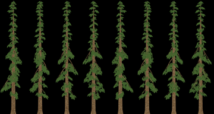 Figure 2. The diffuse color texture map for a redwood tree impostor. The alpha test is enabled in this image to show the actual model cut-out, but the color channels are bled into the transparent areas to promote good filtering at alpha test boundaries. | 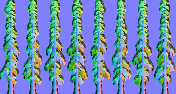 Figure 3. The normal/depth texture map for a redwood tree impostor. The depth is encoded in the alpha channel and cannot be seen here. The normals are bled into the transparent areas to promote good filtering at alpha test boundaries. | 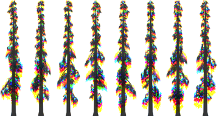 Figure 4. The shadow texture map for a redwood tree impostor. Each of the four channels encodes a depth map for a different light elevation angle. |
Impostor texture maps are created through the following steps. The details for each particular type of texture map are described below.
- Place the model geometry in a fresh new world and center it on the x-y origin. The bottom of the model should rest on the z = 0 plane (the ground).
- Assign a special shader to the geometry that generates the information needed by the impostor for the particular type of texture map being created. Details and example shaders are given below. When impostor texture maps are generated, only the ambient pass it rendered, so the contents of the lighting pass shader do not matter.
- Select the infinite zone in the scene graph viewport, and open the Node Info window by typing Ctrl-I (Cmd-I on the Mac).
- Under the Zone tab, change the “Ambient light color” to bright white (255, 255, 255).
- Go to the Properties tab and assign the Impostor Texture property. Configure this property as described in the next section and hit OK.
- Save the world. This world will only be used for texture map generation, so it can be stored in a location separate from the resources used when running your game.
- Play the world. This is most easily done by typing Ctrl-P (Cmd-P on the Mac) while the world is loaded in the editor.
- While the world is playing, open the command console and type
gentex. A dialog will appear containing check boxes for the types of textures that can be created. The box for “Impostor images” will be checked by default, so you can just hit Enter to proceed. There may be a bit of a pause while the texture map is being generated.
Configuring the Impostor Texture Property
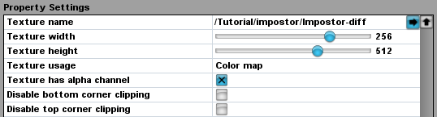
Each world used for generating an impostor texture map must have an impostor property assigned to its infinite zone. This provides the texture generator with information such as the type of texture map, its size, and the name of the output texture resource.
Figure 5 shows the impostor property settings used in the world Data/Tutorial/impostor/Redwood-diff.wld. The “Texture name” setting specifies the name of the output texture map resource. If it begins with a slash, as in Figure 5, then the path is relative to the Data directory. If the name does not begin with a slash, then the path is relative to the same top-level directory containing the world file itself. Since worlds used to generate impostor texture maps are typically kept separate from resources used in a game, this name will usually begin with a slash in order to specify an exact output path.
The “Texture width” setting specifies the width of a single impostor image in the output texture map. Since an impostor image is generated for eight different angles, the actual texture map will always be eight times as wide as the number specified here. The “Texture height” setting specifies the height of each impostor image, and this also becomes the actual height of the final texture map.
The “Texture usage” setting specifies the type of information that is to be contained in the texture map. There are three options: Color map, Normal map, and Shadow map. An alpha channel is always generated for normal maps and shadow maps, but the “Texture has alpha channel” box specifies whether an alpha channel should be included in a color map.
By default, the impostor generator determines whether the top or bottom corners of the rendered impostor quad can be clipped off because the texture map is completely empty in those areas. Clipping reduces the area that the impostor covers on the screen when it is rendered at the expense of a slightly larger number of vertices. In most cases, this can significantly improve performance, but the optimization can sometimes be negligible, in which case it can be better to just turn the clipping off. The “Disable bottom corner clipping” and “Disable top corner clipping” options let you control whether clipping is enabled for the impostor's bottom and top edges.
Creating the Diffuse Color Map
The diffuse color map is generated by assigning a simple ambient shader to the model geometries that produces the flat color of the model at each pixel. (Recall that only the ambient shader matters for impostor texture map generation.)
Figures 6 and 7 show examples of the simple shaders that should be applied to an opaque geometry and an alpha-tested geometry, respectively. The shader typically sends the diffuse texture color directly to the Lighting Output, but other calculations such as multiplication by a diffuse color may be involved. Note that a value of 1.0 is always sent to the Alpha Output—this tells the texture generator where geometry actually exists in the rendered scene.
Since there is always an output to the alpha channel, alpha testing cannot be used in a material used for impostor texture generation (and thus the “Render with alpha test” material flag should not be set). For geometries with alpha-tested transparency like leaves, the Kill Fragment process should be used instead, as shown in Figure 7.
The shaders shown in Figures 6 and 7 can be found in the Data/Tutorial/impostor/Redwood-diff.wld world. The impostor texture map generated by this world (using the gentex console command) is Data/Tutorial/impostor/Impostor-diff.tex.
| 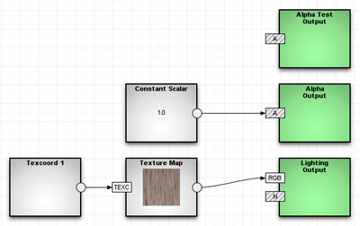 Figure 6. The ambient shader applied to an opaque geometry such as a tree trunk, used in the generation of the diffuse color map for an impostor. | 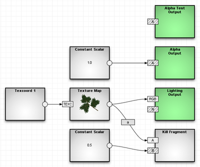 Figure 7. The ambient shader applied to an alpha-tested geometry such as leaves, used in the generation of the diffuse color map for an impostor. |
Creating the Normal/Depth Map
The normal/depth map is generated by assigning a simple ambient shader to the model geometries that produces the normal vector and depth of the model at each pixel.
Figures 8 and 9 show examples of the simple shaders that should be applied to an opaque geometry and an alpha-tested geometry, respectively. The shader always uses the special Generate Impostor Normal and Generate Impostor Depth processes (found under the Complex tab) to send the normal vector directly to the Lighting Output and the depth directly to the Alpha Output.
Since there is always an output to the alpha channel, alpha testing cannot be used in a material used for impostor texture generation (and thus the “Render with alpha test” material flag should not be set). For geometries with alpha-tested transparency like leaves, the Kill Fragment process should be used instead, as shown in Figure 9.
The shaders shown in Figures 8 and 9 can be found in the Data/Tutorial/impostor/Redwood-nrml.wld world. The impostor texture map generated by this world (using the gentex console command) is Data/Tutorial/impostor/Impostor-nrml.tex.
| 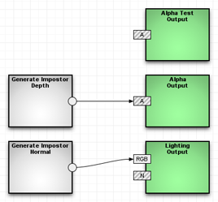 Figure 8. The ambient shader applied to an opaque geometry such as a tree trunk, used in the generation of the normal/depth map for an impostor. | 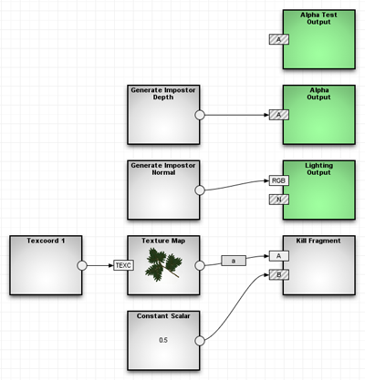 Figure 9. The ambient shader applied to an alpha-tested geometry such as leaves, used in the generation of the normal/depth map for an impostor. |
Creating the Shadow Map
The shadow map is generated by assigning a simple ambient shader to the model geometries that produces the depth of the model at each pixel.
Figures 10 and 11 show examples of the simple shaders that should be applied to an opaque geometry and an alpha-tested geometry, respectively. The shader always uses the special Generate Impostor Depth process (found under the Complex tab) to send the depth directly to the Alpha Output. A constant white color is always sent to the Lighting Output.
Since there is always an output to the alpha channel, alpha testing cannot be used in a material used for impostor texture generation (and thus the “Render with alpha test” material flag should not be set). For geometries with alpha-tested transparency like leaves, the Kill Fragment process should be used instead, as shown in Figure 11.
The shaders shown in Figures 10 and 11 can be found in the Data/Tutorial/impostor/Redwood-shad.wld world. The impostor texture map generated by this world (using the gentex console command) is Data/Tutorial/impostor/Impostor-shad.tex.
| 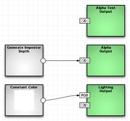 Figure 10. The ambient shader applied to an opaque geometry such as a tree trunk, used in the generation of the shadow map for an impostor. | 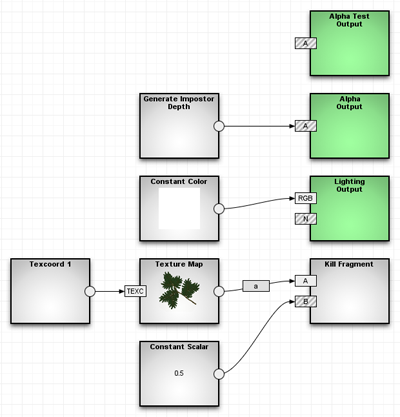 Figure 11. The ambient shader applied to an alpha-tested geometry such as leaves, used in the generation of the shadow map for an impostor. |
Creating an Impostor Material
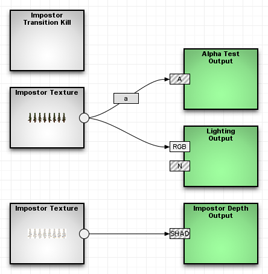
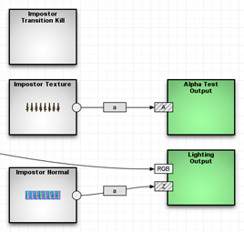
An impostor has a single material applied to it that uses the impostor texture maps that were previously generated. The shaders used in an impostor material typically contain calculations that are similar to those used in the shaders for the real model, but with two main differences. First, the Texture Map and Normal Map processes used for the real model are replaced by the Impostor Texture and Impostor Normal processes. Second, depth information used for shadow casting and receiving is wired up to special outputs.
Unlike the impostor texture generation materials, the impostor materials are allowed to use alpha testing.
Ambient Shader
A typical ambient pass shader for an impostor material is shown in Figure 12. The diffuse impostor texture is sampled, and the resulting color is sent to the Lighting Output. The alpha channel of the diffuse texture is sent to the Alpha Test Output so that the impostor is cut out along the boundaries of the real model. Note that the Impostor Texture process does not take input texture coordinates—these are generated automatically for the quad on which the impostor is rendered.
If an impostor is going to cast shadows, then it should sample the shadow map generated that was generated for it and send the result to the Impostor Depth Output.
Finally, an impostor shader should include an Impostor Transition Kill process (found under the Complex tab). This process has no inputs or outputs—it just needs to be placed anywhere in the shader graph. The transition kill is used for the noisy blend between the real model and the impostor. If this process is not present, then the impostor will simply pop in when the real model gets far enough away from the camera. (Note that the shaders for the real model must also contain a counterpart called the Geometry Transition Kill process.)
The example shown in Figure 12 can be found in the Data/Tutorial/impostor/Redwood.wld world.
Lighting Shader
The impostor-specific parts of a typical lighting pass shader are shown in Figure 13. As in the ambient shader, the alpha channel of the diffuse texture is sent to the Alpha Test Output so that the impostor is cut out along the boundaries of the real model. Although not shown in the figure, the color channels of the diffuse texture are also used for calculating the color ultimately sent to the Lighting Output.
The Lighting Output process has a special input port labeled Z that should receive the depth information stored in the alpha channel of the normal/depth texture map generated for the impostor. The Impostor Normal process should be used to sample the normal/depth texture, and not the Impostor Texture process. Other calculations involving the impostor normal are not shown in the figure, but the color channels of the impostor normal should be used as the analog of the normal map in the shader for the real model.
Like the ambient shader, the lighting shader should include an Impostor Transition Kill process to facilitate a smooth transition to the impostor image.
The example shown in Figure 13 can be found in the Data/Tutorial/impostor/Redwood.wld world.
Using an Impostor Node
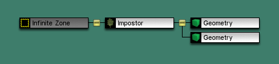
An impostor is used in a world by placing an impostor node in the scene and making it the parent of the nodes belonging to the corresponding real model. A typical arrangement is shown in Figure 14 for a tree stored in an instanced world. This example can be found in the Data/Tutorial/impostor/Redwood.wld world.
An impostor node is usually used in an instanced world containing some model that is replicated many times in some other world (see the Worlds Page). To place an impostor node in the scene, select the Impostor tool from the Impostors Page under the Instance tab, and click in the scene. An impostor node should be placed at the coordinates (0,0,0) in an instanced world. After the impostor node has been added to the world, the geometry nodes belonging to the model it represents should be made subnodes of the impostor node by dragging them in the scene graph viewport with the Move Nodes tool. These nodes should have the exact same transforms that they had when the impostor's texture maps were generated.
The impostor material is assigned to the impostor node by making the impostor material the current material, selecting the impostor node, and then selecting the Set Material command from the Geometry menu.
The shaders used on the geometry nodes should each contain a Geometry Transition Kill process in both the ambient and lighting passes. This process has no inputs or outputs—it just needs to be placed anywhere in the shader graph. The transition kill is used for the noisy blend between the real model and the impostor. If this process is not present, then the geometry will simply pop out when the real model gets far enough away from the camera.
The Node Info window for an impostor node contains an Impostor tab, under which you can find settings for the distances at which the impostor transitions into a replacement for the real model. The “Render distance” is the closest distance to the camera at which the impostor is rendered, and the “Transition length” is the length beyond that in which the transition from the real model to the impostor takes place. Of course, a transition length of zero would cause the real model to instantly pop to the impostor at the render distance.